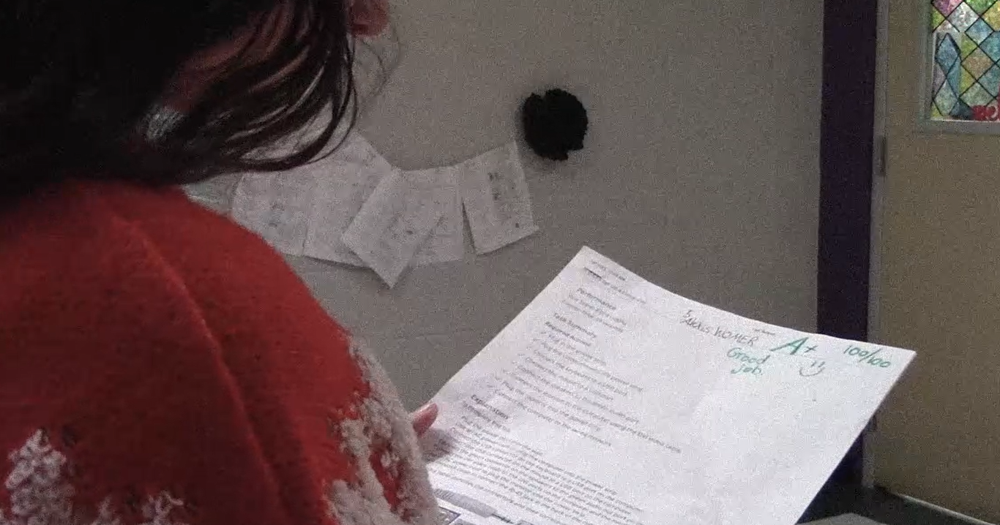

This is probably my favorite video I've made. We decided to make a commercial encouraging kids to take care of themselves and not stress too much before testing. We did this by making it look like a 90's commercial and including humor. It was a lot of fun to make the box design and edit. It was the first video I felt really good about and it even ended up in the school news!
We also ended up making a commercial to advertise our school uniforms as a luxury clothing brand. It was a lot of fun to film and edit since we came up with some crazy ways to promote the uniform, including putting it on a plant, dogs, and even using it to shut someone up! I also used Photoshop much more in this assignment to edit some pictures, so it was nice to use more skills.
In my ELA class, we had to write our own Twilight Zone episode, choose one to work on, and film it. Mine ended up being selected, so I wrote, directed, and edited it. My episode was about a subservient robot that ended up becoming sentient. She was shocked and appalled that she was being used, but ended up getting her memory wiped. This was probably my favorite project from the class and I love how it turned out!